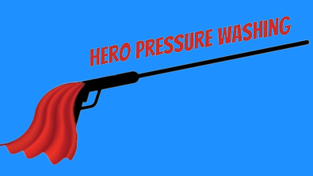

Hero Pressure Washing

About
Equipment
Before and After Pictures
At Hero Pressure Washing,
we use a Craftsman 3100 PSI pressure washer. This machine
is strong enough to remove all organics and dirt
from concrete, but not powerful enough to damage concrete.
For surfaces, we often use a surface cleaner attachment.